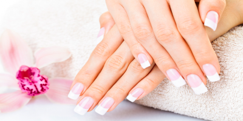

Unhas em Gel
São unhas artificiais moldadas sob a unha natural. Feitas de gel UV, que precisam de cabine de luz Ultra Violeta para curar o gel e possuem como extensão o próprio gel sob um molde adesivo ou então tips com cola (unhas postiças cuja função é dar alongamento para a unha de gel).
Super recomendáveis para quem tem unhas quebradas, lascadas, roídas obsessivamente, curtas e vítimas de pequenos acidentes, como danificar alguma as vésperas de um evento importante.
Após moldadas e submetidas à luz ultravioleta, a luminosidade faz com que o gel fixe-se e endureça mais rápido no processo. Por isso, ela é uma grande e famosa aliada em tantos casos de emergência da beleza.
Há situações em que o gel UV é usado somente para proteger as unhas, fazendo com que durem mais, aplicando-o sob elas naturalmente, sem extensões. Para isso, é preciso que a unha já esteja grande. Lembrando também que é considerado o procedimento de efeito mais original.